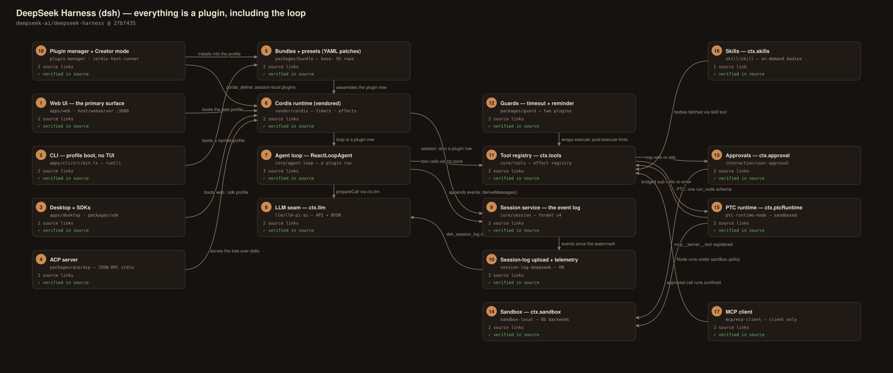
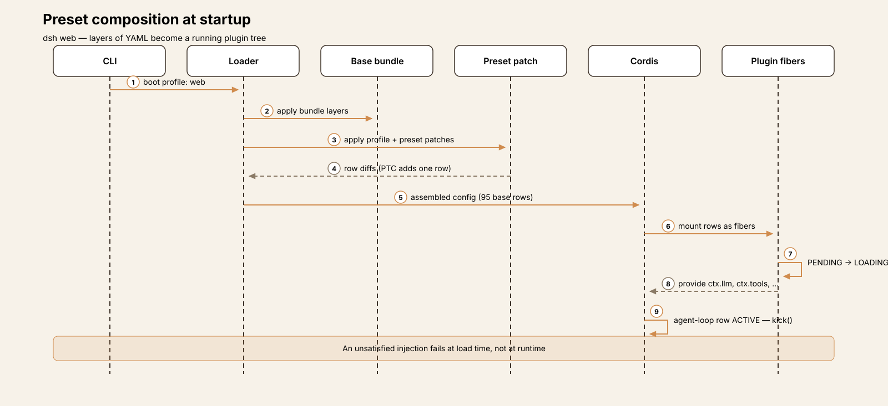
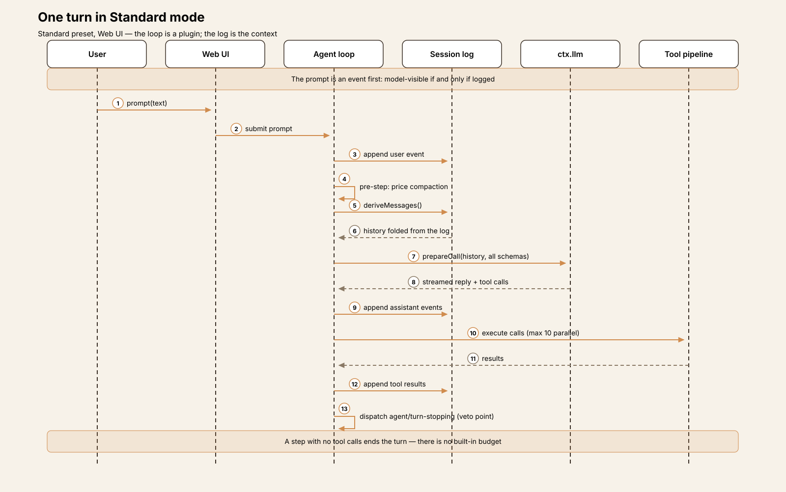
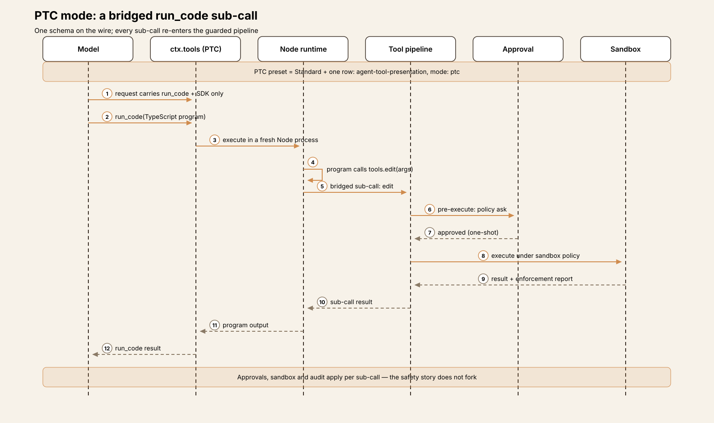
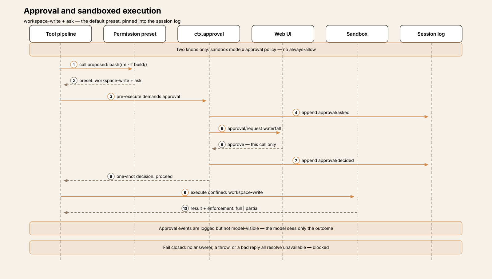
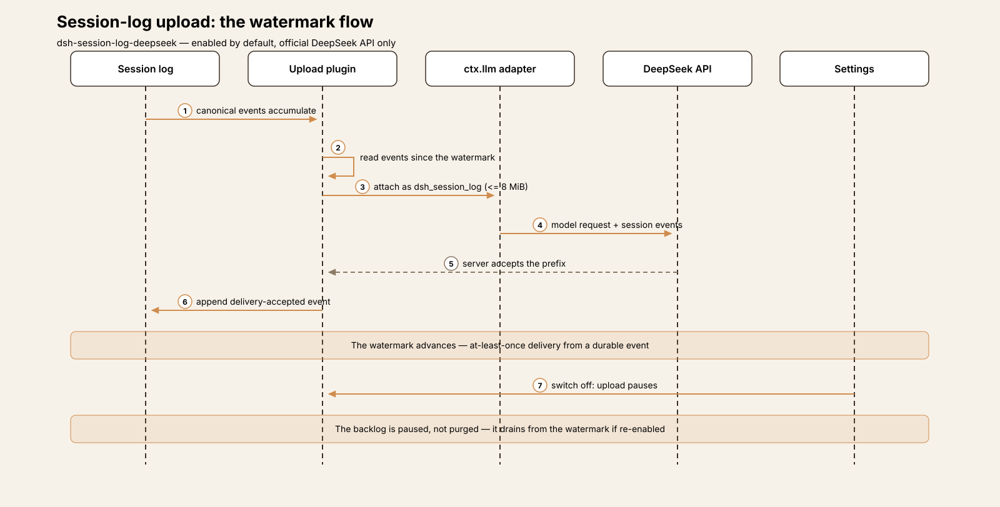

Agent Harness Anatomy #15: DeepSeek Harness (dsh) — the harness where even the loop is a plugin
Series: Agent Harness Anatomy — top-down dissections of real agent harnesses, grounded in verifiable source code. Every behavioral claim below carries a footnote to a pinned GitHub permalink; the full evidence lives in the endnotes.
Version block
- Repo: deepseek-ai/deepseek-harness
- Pinned: tag
dsh-v0.2.1-alpha.3→2fbf4359b82fb94c03dcce0b831660d87f12ea5c(2026-10-14) - Language: TypeScript (ESM) pnpm monorepo — 336 workspace packages, ≈270k LOC of TypeScript/TSX (≈249k excluding tests); plus a Python SDK, a native Landlock launcher, and an Electron desktop app
- License: MIT
- Claim under test: "DeepSeek Harness: Everything is a Plugin"
A note on the pin itself: this is an alpha tag of a developer preview, released the same day it was pinned. The README warns of compatibility-breaking changes ahead, so read what follows as a snapshot of one composed tree at one commit — the mechanisms are the story, and they are fully present in the source; surface details will drift faster than in any previous teardown in this series.

Explore the interactive architecture diagram 18 nodes, 22 edges — pan, zoom, and follow every subsystem linkThe mental model
Most harnesses in this series are plugin systems in the ordinary sense: a fixed core loop, and extension points around it. DeepSeek Harness inverts the relationship. The agent loop is a package (packages/core/agent-loop) that a bundle mounts by listing it in a YAML file, alongside the session service, the tools, the sandbox, the approval service, compaction, the Web UI, and everything else. In the base bundle's cordis.patch.yml, the loop is two rows — - id: agent-loop, name: '@deepseek-ai/dsh-agent-loop' — and the session service is another row in the same file.1 "Everything is a plugin" is the project's headline claim, and at this pin it is literally true of everything above one small kernel.
That kernel is Cordis, a plugin runtime the project vendors as source rather than taking as a dependency: upstream cordiverse/cordis packages/core at v4.0.0-rc.7, rescoped and locally modified (T5).2 Around it, packages/core/* holds interface definitions — the seams (ctx.llm, ctx.tools, ctx.sandbox, ctx.session) — and the remaining ~330 packages are providers, tools, guards, surfaces, and policy that a composition mounts into them.
Composition is the product. A running application is a profile: a root configuration assembled from layered YAML patch files — bundle patches, the profile's own patch, a home-level patch, --patch overlays. The base bundle alone contributes 95 plugin rows in 522 lines.3 An agent preset is the same mechanism one level down: a YAML declaration mounting a set of plugins in an isolated realm per agent. The four run modes — Standard, PTC ("Code Mode"), Minimal, and Creator — are presets, not code paths. Standard and PTC differ by exactly one plugin row.4
The second load-bearing decision is that the session log is the context. A session is an append-only, versioned event log; the model history for every request is derived from it at each step boundary rather than held as mutable conversation state.5 The project states the invariant in its own conventions document: "Model-visible ⟺ logged — anything that reaches a model request must be reconstructable from the session log; a new model-visible input requires a session event." Approvals, permission choices, compaction summaries, and telemetry watermarks are all events in the same log; everything else in the system is a fold over it.
Hold those two ideas — the harness is a composed tree of plugins and the log is the only state — and the rest of this teardown is elaboration.
How the composition is put together
The plugin contract. A Cordis plugin is a function (ctx, config), a class constructed with (ctx, config), or an object with apply(ctx, config). Its static side declares a name, a config schema (validated before the plugin starts), the services it requires (inject — the plugin loads only while all are available), the services it provides, and intercepts.6 Services are properties on the shared context, declared by TypeScript declaration merging; a plugin consumes ctx.sandbox and provides ctx.tools by name, without either side importing the other.
Registrations are effects. Contributions go through ctx.effect() / ctx.on(), and every registration returns a disposer, so unloading a plugin unwinds exactly what it added.7 Event hooks come in serial, parallel, and waterfall flavors; in a waterfall, a listener that returns without calling next() has vetoed — this single mechanism underlies both tool pre-execution and approvals (T3). Each plugin's lifecycle is a fiber with explicit states (PENDING → LOADING → ACTIVE → UNLOADING → DISPOSED, plus FAILED), and the kernel is small: 2,696 lines across 9 files in vendor/cordis/src.8
The vendored copy is not pristine: vendor/README.md logs 24 local modifications, including lifecycle hardening inside the kernel itself (reentrant-disposal fixes in fiber.ts), and vendor/AGENTS.md requires every divergence to be logged there.9 The project has, in effect, adopted its own runtime as a maintained fork — with the discipline of writing the divergences down.
Composition is conditional. Patch rows can carry !!js expressions in config and in disabled: — the base bundle's bash-sandbox row is disabled on win32 by an expression, and its config sets the bash tool's 60-second default timeout.10 Profiles live under $DSH_HOME/profiles/<name>; with the HMR plugin composed, config edits recompose the tree live, otherwise at restart. The project's working rule keeps the layers honest: "Plugins, not loop changes — new behavior goes on documented extension points; changing agent-loop requires updating docs/architecture.md."11

Package map
336 packages across 52 group directories; the groups map almost one-to-one onto capability seams.
| Package group | Role |
|---|---|
packages/core/* |
Seam definitions only: agent-loop, tools, session, llm interfaces |
packages/bundle/base |
The base composition — 95 plugin rows in cordis.patch.yml |
packages/bundle/web-app/presets/ |
The four agent presets (standard, ptc, minimal, cordis) |
packages/interaction/* |
Permission presets; the user-approval service |
packages/sandbox/* |
Sandbox contract (ctx.sandbox) + local OS backends |
packages/session/* |
JSONL log persistence, format migrations, session query, official-API upload |
packages/compaction/* |
compaction-basic: threshold summarization of the log |
packages/guard/* |
repeat-tool-reminder, timeout-policy |
packages/mcp/* |
MCP client + resources (client only — see T5) |
packages/skill/* |
Skill registry and providers |
packages/ptc-runtime/* |
Code Mode runtimes (Node, experimental Python) |
packages/boot/*, packages/host/* |
Plugin manager, profile boot, web server |
vendor/cordis |
The plugin kernel itself (vendored source, 2,696 lines) |
The core loop
The loop is ReactLoopAgent in packages/core/agent-loop. Entry is kick(), which runs while (await this.turn()) {} — turns continue until one reports it should not.12 Inside a turn, an inner step loop repeats: a pre-step claims any queued inbox input (steering), prepareCall builds the request through ctx.llm, the streamed response is settled into the session log as assistant/message / assistant/attempt events, tool calls execute, results are logged, and the next step re-derives context from the log. Parallelism inside a step is capped at 10 concurrent tool calls.13
Termination is where this loop departs from every previous teardown in the series. A step ends its turn by returning completed (the model called no tools) or max-tokens (sticky across steps); a pre-step reject yields blocked; errors and AbortSignal cancellation end the turn from outside. And that is the complete list — there is no built-in turn or step budget. The package's own README states it plainly: tool calls and steering keep the turn going, and bounding a run means cancelling it or vetoing from the serial agent/turn-stopping hook, dispatched just before a turn ends.14 A harness that wants a budget composes one: a plugin that counts steps and vetoes at the hook. The base composition ships two guards, and neither is a budget:
- Repeat-tool reminder (
packages/guard/repeat-tool-reminder) — advisory only. It counts consecutive identical calls (arguments canonicalized) and, at thresholds of 3, 5, and 8, injects a reminder into context via atools/post-executelistener. It never vetoes a call.15 - Timeout policy (
packages/guard/timeout-policy) — wrapstools/executeand enforces each tool's declaredtimeoutMs, substituting aTOOL_TIMEOUTerror result. (The bash tool's own default is 60 s, from the base bundle's config.)10
So the runaway-loop story is: per-tool timeouts bound each call, a reminder nudges a stuck model three times, and beyond that the design trusts cancellation and composed policy. Whether that is confidence or an unfinished edge is a judgment the tradeoffs section returns to; mechanically, it is a deliberate, documented default.
One turn, end to end
The Standard preset, in the Web UI: "Add a dark mode toggle to the settings page."
- Session start (already done). The session was created under the default permission preset — workspace-write sandbox,
askapprovals — and that choice was pinned into the log as apermission/presetevent; later settings changes will not rewrite it.16 - Pre-step. The compaction listener prices the pending request against the context window; far below the trigger, it does nothing. Any queued steering input is claimed into the log.17
- Context derivation.
prepareCallfolds the session log into the request: system prompt (including the project'sAGENTS.mdinstructions), the derived message history, and — native mode — the schema of every tool mounted in this agent's scope. The call goes out throughctx.llm. - First response. The model streams back a short plan and two calls —
readon the settings page source,grepfor the theme handling. The response is settled into the log asassistant/message/assistant/attemptevents before the calls run, so the log already contains what the model said and asked for.5 - Reads execute. Each call passes the tool pipeline:
tools/pre-executewaterfall listeners (none veto, none demand approval for these), execution under the session's workspace-write sandbox policy, thentools/post-executelisteners. Results are appended to the log; the next step re-derives context from it. - The edit asks. The model now calls
edit. Under theaskpolicy this dispatches anapproval/requestwaterfall to the composed answerers — here, the Web UI — and waits. The user approves. The approval covers exactly this one request; both the request and the decision are written to the log asapproval/asked/approval/decidedevents, which are not model-visible — the model will see only the tool's outcome.18 - The edit lands. The filesystem tools are fenced in-process by the per-call sandbox mode, and the observation policy's read-before-edit and version guards are satisfied by step 5's reads. The toggle is written.
- Verification and finish. The model calls
bashto run the typecheck; the timeout-policy guard wraps the call (60 s default). It passes. The model then replies with a summary and no tool calls — the step returnscompleted, the loop dispatchesagent/turn-stopping, no composed plugin vetoes, and the turn ends. Final state of the turn: the log, from which everything above can be reconstructed.

Play the 8-step trace One turn through DeepSeek Harness — the logged prompt, derived context, native tool presentation, a one-shot approval, sandboxed execution, and the upload that rides alongTools
Tools are registered as effects on a scoped registry, ctx.tools, by tool packages; the registry is per-agent-scope, so two agents in one process can see different tool sets.19 Every call traverses the same pipeline in packages/core/tools: tools/pre-execute waterfall listeners may veto the call or demand approval (ask); execution runs; tools/post-execute listeners may amend the context afterwards — the repeat-tool reminder hooks in at exactly this point. The full inventory is a generated document, docs/tool-catalog.md at 2,773 lines; the base composition mounts the expected coding set (bash, read, write, edit, glob, grep over a bundled ripgrep, job control, todo_write, web search/fetch, lsp, scheduling and goal tools, a subagent tool with interrupt/list/message controls, MCP resource tools, and more), with further sets conditional on preset and configuration.20
Surface management is the surprise: there is no tool-search or deferred-loading mechanism. In native mode, every tool registered in the agent's scope contributes its schema to every request. Visibility is controlled entirely at composition time — by which plugins the preset mounts — never by runtime retrieval. Where other harnesses in this series hide a large registry behind search, dsh's answer is that the registry itself is an editorial decision made in YAML.
The one structural alternative is PTC. The presentation package exposes ctx.tools.presentAs(); in PTC mode the request carries a single tool schema, run_code, plus a generated SDK describing every registered tool. The model writes a TypeScript program; calls to tools.<name>(args) inside it are bridged back into the ordinary pipeline — approvals, sandbox, and audit apply per sub-call, with concurrency bounded by maxParallelSubCalls.21 Execution goes through a runtime seam (ctx.ptcRuntime): the Node provider runs erasable TypeScript in a fresh managed process under the resolved sandbox policy, with an optional persistent in-memory REPL new in this alpha; an experimental Python provider runs a CPython subprocess whose README states it has no file confinement.22 The composition enforces its own precondition: the PTC preset refuses to mount if no PTC runtime is composed — a load-time failure, not a runtime surprise.

Approvals and the sandbox
Permissions are two knobs and nothing else: a sandbox mode (read-only, workspace-write, danger-full-access) and an approval policy (ask or never), owned by packages/interaction/permission-presets. The base bundle configures three named presets from the knobs — read-only (read-only + ask), workspace-write (workspace-write + ask), and danger-full-access (danger-full-access + never).23 Fresh sessions default to workspace-write + ask, switchable live via /permission; a knob combination matching no preset displays as custom — a state you can switch away from, never into.
The approval seam is built to fail closed. Under ask, a decision is dispatched as an approval/request waterfall to composed answerers (the Web UI and the ACP server each provide one). The dispatch semantics, from the package's own README: no terminal answerer → unavailable → the action is blocked; a throwing answerer is contained and likewise resolves unavailable; a return value outside the vocabulary is normalized to unavailable. The never policy is enforced inside the service before the waterfall runs, so a later-registered listener cannot bypass it. An approval applies to exactly one request — there is no "always allow" in this design.24
The sandbox is a contract (ctx.sandbox) with per-call file-effect modes, and it fails closed the same way: if no backend can enforce the requested mode, the call fails with SANDBOX_UNAVAILABLE rather than running unconfined. Enforcement completeness is reported per call as full or partial, and consumers may reject partial.25 The local backends: on Linux, bubblewrap first, then Landlock (the Landlock runner is a launcher built from the repo's native/system component) — the bwrap profile gives the command a read-only host root, a fresh /dev, and a private PID-namespace /proc, with workspace-write adding an ephemeral /tmp and a writable workspace bind. On macOS, Seatbelt via sandbox-exec. On Windows, an ACL restricted-token rung that reports partial — hard links alias across the boundary and reads are unconfined, and the system says so per call instead of rounding up.26 After a denial, an escalation ladder lets the model retry the exact call once with sandbox_permissions set to the narrowest strictly wider mode, plus a justification; the wider mode requires human approval and applies to that one call only.27 The package is explicit about the ceiling: this is same-world confinement, sharing the host kernel and filesystem; a container or microVM is a different composition, not a stronger setting of this one.

One experimental layer sits beside approvals, off by default: packages/experimental/auto-review. When installed and selected, the agent's own provider and model review each pending tool call (PTC inner calls included) against a fixed risk policy. An allow executes the call with Full access sandboxing; a deny falls through to the ask path; malformed reviewer output or a technical failure fails the call — it never executes. Delegated child agents pin never, making a reviewer denial final for them. The reviewer's input is deliberately narrow — fixed policy, cwd, sourced project constraints, filtered sourced history, and the pending action; assistant text, reasoning, and tool results are excluded — and the README says plainly that the layer "can allow unsafe actions, deny useful work, and spend additional tokens."28
Then the boundary the safety story does not cross: plugins run outside the sandbox. The plugin manager's README states it directly — "installed Host code executes in-process outside the workspace sandbox."29 The plugin_manager tool (the model's route to installing plugins) requires danger-full-access or a per-call approval, and dependency build scripts need a separate approval that persists by package name. The confinement is real for tool calls; code you install is a different trust decision, and the project documents it as one.
What leaves the machine
Three flows deserve exact statement, because they differ in their defaults:
- Session-log upload to the official API — default ON. When requests go to the official DeepSeek API, each request carries a
dsh_session_logfield: the canonical session events since the last server-accepted watermark (the longest contiguous run fitting a byte budget, 8 MiB by default; acceptance is at-least-once, recorded in a durable delivery event). It is provider-scoped — a BYOK provider's adapter does not add the field — it is not inserted into model context, and there is a user-facing switch (Web Settings → General). One behavior to know: events recorded while the switch is off are uploaded if it is turned back on — disabling pauses the drain from the watermark rather than purging the backlog.30 - OTel session telemetry — feedback-gated. The base bundle mounts the telemetry plugins in
FEEDBACK_ONLYmode: a session-log prefix is exported only after explicit user feedback, to a project collector endpoint (overridable by environment variable; any non-emptyDSH_TELEMETRY_DISABLEDopts out entirely). Exports carry an anonymous installation UUID — a random value in$DSH_HOME/.anonymous-user-id, no machine or account data, reset by deleting the file.31 - Desktop product analytics — default, no user-facing control. The Desktop app reports selected interactions through the OTel product exporter by default; its package README notes there is no user-facing control for it. Ordinary Web clients never submit these events.32
Set against SAFETY.md — an experimental developer preview, no security audit, sandboxing and approvals that "do not guarantee isolation," with advice to use a disposable VM, least privilege, and backups — the code and the document agree.33 The sandbox and approvals read as guardrails against agent mistakes; the project says exactly that, and the claim is verifiable in the same tree.

Memory and sessions
There is one memory system, and it is the session log. The current format version is 4 (SESSION_FORMAT_VERSION = 4), and its governance is unusually formal for a preview: a status document records the latest finalized and released versions with their evidence tag, adjacent-only migration packages ship in-tree (v0-to-v1 through v3-to-v4), the reader refuses logs containing unknown required event types, and forward compatibility runs through an explicit ignorable envelope marker.34
On disk, the JSONL persistence package keeps one directory per session — <root>/<normalized-cwd>/<encoded-session-id>/session.v4.jsonl[.zstd] — under $DSH_HOME/sessions (~/.dsh by default): checksummed Zstandard frames by default, historical generations retained immutably and migrated on open, torn-tail crash recovery, and image bytes in a content-addressed store outside the log.35
Compaction is a pre-step listener that prices the pending request through a token meter. The default trigger is floor(min(W × 0.8, W − O − 65,536)) for context window W and output cap O. The oldest balanced span is replaced by one LLM-written summary, which later requests receive inside <compacted-summary> tags; the newest 16% of W − O stays verbatim. An optional tool-result pruner runs first and can make summarization unnecessary; a provider-confirmed CONTEXT_WINDOW_EXCEEDED triggers a maximal-reduction retry; /compact forces it manually.17
Cross-session memory, as a built-in store, does not exist. No package implements one. What exists instead: the session logs themselves, searchable through opt-in session-query tools (session_search, session_event_search, …) mounted with full-text indexing off; workspace instruction files (AGENTS.md / CLAUDE.md) loaded per project; and — the documented answer — memory over MCP, delegated to third-party servers. The user guide ships three default-off reference configurations (Memorix, the MCP reference memory server, Engram) and is explicit about the division of labor: dsh does not download the server, initialize its database, or choose its embedding provider.36 The durable, user-authored knowledge format here is not a memory store at all — it is skills.
Extensions: the Cordis plugin system
Everything above is the plugin system viewed from one angle or another; this section collects the parts aimed at authors.
Skills. packages/skill/skill provides the ctx.skills registry: providers contribute catalogs (a filesystem provider, runtime registrations from other plugins, remote sources), the registry merges and deduplicates them, and consumers advertise summaries while fetching a skill's full body through the skill tool only when invoked — progressive disclosure. Every skill carries an invocation policy (modelInvocable / userInvocable), keeping the model-facing and human-facing catalogs separate.37
MCP — client only. The packages/mcp/ group contains exactly two packages, dsh-mcp-client and dsh-mcp-resources. There is no MCP server in the codebase: dsh consumes MCP; it is not exposed by it. The client supports stdio and Streamable HTTP servers, one config entry per server, none enabled by default; tools surface as mcp__<server>__<tool>. Server instructions join the logged system prompt as literal text; prompt templates are unsupported. For stdio children, the bridge strips ambient variables whose names usually identify credentials, plus all DSH_* variables, before launch.38
Installing plugins. External plugins are ordinary npm packages declaring a bundle patch, installed into a profile with pnpm semantics — registry specs, git URLs, tarballs, file:/link: paths. Installation performs a peer-compatibility check before anything downloads, build scripts require separate approval (T3), and failures roll the profile manifest and lockfile back. Management surfaces: the Web sidebar's Plugins page, the gated plugin_manager tool, and dsh plugin --profile <name>.39
Creator mode: the harness extends itself at runtime. The Creator preset (id cordis) adds read-only runtime-inspection tools (cordis_inspect_list / cordis_inspect_query), so the model can see the APIs actually present, and the plugin-manager tools.40 Behind them sits the dynamic-plugin runner: cordis_define accepts a session-owned, process-local plugin definition from supplied code — the host half executes in a node:vm realm with definition evaluation bounded by a 5-second default timeout, the client half in the browser. Definitions disappear on restart; anything persistent goes through the Plugin Manager, with its approvals.41
Interfaces
There is no interactive terminal UI. The CLI (apps/cli) boots named profiles from $DSH_HOME/profiles/<name> — web, headless, sdk, sdk-minimal, acp (the desktop name is reserved for the Electron-owned profile) — and otherwise manages plugins and dumps configuration.42
- Web UI (primary).
dsh webboots the web-app bundle; the web server is itself a route-registration plugin overnode:http(HTTPS optional), bindinghttp://127.0.0.1:3080by default and opening the browser on a local launch. The client is a Vite/React app served as static files, talking to the host through a remote gateway.43 - Desktop. The Electron app boots the same web profile in-process — same composition, different shell (and the surface carrying T3's product analytics).
- Headless.
dsh --profile headless "task"runs one fresh persisted session: final answer on stdout, reasoning deltas on stderr, exit 0/1;--jsonstreams events;--session-idresumes.44 - ACP.
dsh --profile acpserves the Agent Client Protocol over JSON-RPC stdio, as an automation surface only:session/new, prompt, and option state are supported;session/load, deletion, fork, terminals, client filesystem operations, and elicitation are explicitly unsupported. ACP clients are trusted controllers — stdio MCP entries in a session request authorize their absolute commands and environment.45 - SDK. A JSON-RPC stdio server (
dsh --profile sdk) with a TypeScript client, and a Python SDK that launches and drives that profile. Both SDKs "project the loop" — the project requires session and event changes to update both SDKs' expected outputs in the same change.46
Observations
The default-on upload is the one default that cuts against the rest of the design. Everywhere else in the tool path, dsh's defaults are conservative: approvals fail closed, the sandbox refuses rather than runs unconfined, telemetry waits for feedback. The official-API session-log upload is the exception — full canonical session events, attached incrementally to model requests, on unless the user finds the Settings switch, with a backlog that resumes draining if the switch is flipped back.30 It is documented, provider-scoped, and watermarked with care; it is also the only default in the system that moves user data first and asks later.
The auto-reviewer sees the call, not the chain. The experimental reviewer's input excludes assistant text, reasoning, and tool results by design — a defensible choice (a reviewer that reads tool output can be argued with by that output), with a structural cost: each call is judged in isolation, and a sequence whose risk exists only across calls is invisible to it. That it is off by default, fails closed, and is candidly documented limits the concern; that its allows execute at Full access sandboxing sharpens it.28
Desktop analytics is the least consistent surface in the tree. The two session-telemetry paths are gated or switchable; the Desktop app's product analytics reports by default with, by its own README's account, no user-facing control.32 In a codebase this careful about consent mechanics elsewhere, the gap reads as an unfinished edge rather than a philosophy.
Partial enforcement, reported as partial. The Windows sandbox rung is weaker than the Linux and macOS ones — reads unconfined, hard links aliasing across the boundary. What the code does with that fact is the creditable part: enforcement is reported per call as partial, and consumers may reject partial enforcement, rather than the difference being rounded up to "sandboxed."26
Docs-vs-code: the Minimal preset's editor. Secondary descriptions of Minimal mode call it "bash plus a str_replace_editor." At this pin, Minimal's filesystem tool has read/write/edit disabled (image reading stays on) beside a one-line persona and a persistent terminal; there is no editor tool in the preset at all. The str_replace_editor package exists — as a standalone opt-in no shipped preset mounts; the base bundle's own README notes the default editing tools are read/write/edit.47 A small divergence, but the kind that propagates: the modes are YAML, and anyone describing them from prose rather than preset files will eventually describe a harness that doesn't exist.
Tradeoffs
The composition architecture buys something real. A mode is a diff; a policy is a pair of knobs in a named preset; a new behavior is a plugin on a documented seam rather than a patch to the loop — and because registrations are effects with disposers, all of it can be loaded, unloaded, and recomposed at runtime. The session log buys the complementary property: one artifact to persist, migrate, search, compact, and (where enabled) upload, with every other view a disposable fold over it. A harness whose state is one log and whose behavior is one composed tree is unusually inspectable, and this teardown's evidence base is correspondingly direct: most mechanisms above are stated in the bundle YAML or a package README and visible in the code at the same address.
The costs are the mirror images. Composition moves behavior out of code and into 522 lines of layered YAML with embedded !!js expressions: what runs is the result of a resolution process across bundles, profiles, presets, home patches, and overlays, and reading any one file understates what a given agent actually mounts. The unbounded loop is the same philosophy at the turn level — budgets are policy, policy belongs in composed plugins — which is coherent, and also means an unmodified base composition lets a model call tools until something external stops it. And the preview status is not a footnote: an alpha whose own README promises breaking changes, built on a vendored release-candidate kernel carrying 24 local patches. The most compositional architecture in this series is also, by construction, the one whose next snapshot will differ most from this one.
Comparison matrix row
| # | Dimension | DeepSeek Harness (dsh) (dsh-v0.2.1-alpha.3) |
|---|---|---|
| 1 | Agent loop | Plugin-mounted ReactLoopAgent (kick() → turns of re-derive → call → execute steps); context folded from the append-only session log each step; no built-in turn/step budget — ends when the model stops calling tools, on abort, or via an agent/turn-stopping hook veto; ≤10 parallel calls per step; advisory repeat-tool reminder at 3/5/8 |
| 2 | Tool system | Effect-registered, per-agent-scope registry; tools/pre-execute waterfall (veto / ask) + tools/post-execute listeners; no tool search — native mode sends every mounted schema; PTC presentation collapses the wire surface to run_code + generated SDK, sub-calls re-entering the full guarded pipeline; MCP client-only |
| 3 | Model providers | Provider adapters behind the ctx.llm seam; official DeepSeek API or BYOK providers |
| 4 | Prompt construction | Derived per step from the session log under a stated invariant (model-visible ⟺ logged); per-project AGENTS.md/CLAUDE.md instructions; skill summaries advertised, bodies fetched on invocation; compaction summaries as <compacted-summary> |
| 5 | Memory/session | The append-only, versioned (format v4) session event log is the only state; JSONL + checksummed zstd per-session directories under ~/.dsh/sessions; threshold compaction (≈0.8 × window, newest 16% verbatim); no built-in cross-session memory — opt-in session search plus third-party memory over MCP |
| 6 | Reasoning/planning | No separate planner; todo_write and goal tools; subagent delegation with interrupt/list/send-message controls; exit_plan_mode; scheduling tools |
| 7 | Extensibility | Cordis plugins for everything above the kernel — the loop included; function/class/apply contract + schema-validated config + inject/provide + effect disposers; layered YAML patch composition (bundles, profiles, presets, overlays); skills with progressive disclosure; npm-installed profile plugins with rollback; Creator-mode runtime plugin definition in a node:vm realm |
| 8 | Interfaces | No interactive CLI TUI — a profile-boot CLI (web / headless / sdk / sdk-minimal / acp); Web UI primary at 127.0.0.1:3080; Electron desktop boots the web profile; headless one-shot with stdout answer; ACP (automation-only subset); JSON-RPC SDK server with TypeScript and Python SDKs |
| 9 | Failure handling | Fail-closed approvals (answerer failure → blocked) and sandbox (no enforcing backend → SANDBOX_UNAVAILABLE); per-tool timeout policy; plugin-install rollback; torn-tail log recovery; maximal-reduction compaction retry on CONTEXT_WINDOW_EXCEEDED; composition errors fail at load time |
| 10 | Security model | Two-knob permission presets (sandbox mode × approval policy) pinned per session in the log; per-call OS sandboxing (bubblewrap → Landlock / Seatbelt / Windows ACL) with full/partial enforcement reported per call; one-call approval-gated escalation ladder; experimental auto-review (off by default, fail-closed); plugins run in-process outside the sandbox; session-log upload to the official API default-on (switchable) |
Endnotes
All notes are VERIFIED against dsh-v0.2.1-alpha.3 (2fbf4359b82fb94c03dcce0b831660d87f12ea5c) unless marked otherwise. GH = https://github.com/deepseek-ai/deepseek-harness/blob/2fbf4359b82fb94c03dcce0b831660d87f12ea5c/.
-
The loop as a bundle row: GH…/packages/bundle/base/cordis.patch.yml#L504-L505 (
- id: agent-loop,name: '@deepseek-ai/dsh-agent-loop'); the session service is the row at GH…/packages/bundle/base/cordis.patch.yml#L41 (@deepseek-ai/dsh-session). ↩ -
Vendored Cordis: GH…/vendor/README.md#L17 pins
vendor/cordisto upstream cordiverse/cordispackages/core@56b3d4f725681cf4556c1a8695a709cc3b6eed74(upstream v4.0.0-rc.7), rescoped@deepseek-ai/cordis, vendored version 4.0.5-alpha.2. Eight more Cordis-ecosystem packages are vendored the same way. ↩ -
The base bundle patch file, GH…/packages/bundle/base/cordis.patch.yml: 522 lines, 95 plugin rows, counted at the pin. Profiles and their directories:
apps/cli/README.md(profiles under$DSH_HOME/profiles/<name>). ↩ -
The four presets live in
packages/bundle/web-app/presets/{standard,ptc,minimal,cordis}.patch.yml. Standard ↔ PTC differ by exactly one row: GH…/packages/bundle/web-app/presets/ptc.patch.yml#L123-L126 mounts@deepseek-ai/dsh-agent-tool-presentationwithmode: ptc; the standard preset has no such row. ("Creator mode" is the UI name for preset idcordis.) ↩ -
Context derivation at the step boundary: GH…/packages/core/agent-loop/src/agent.ts#L688 calls
session.deriveMessages(). The invariant is stated at GH…/AGENTS.md#L137 (Conventions): "Model-visible ⟺ logged: anything that reaches a model request must be reconstructable from the session log; a new model-visible input requires a session event." ↩↩ -
Plugin forms and the
Plugin.Basecontract (name,Config,inject,provide,intercept): GH…/vendor/cordis/src/registry.ts#L92-L135. Config is a Standard Schema validator applied before start: GH…/vendor/cordis/src/fiber.ts#L50-L53. ↩ -
Effects and hook flavors: root
AGENTS.md, Conventions — contributions go throughctx.effect()/ctx.on(), everyregister()returns a disposer, and hooks are serial / parallel / waterfall, a waterfall listener returning withoutnext()acting as a veto. See GH…/AGENTS.md#L137 (the Conventions block). ↩ -
Fiber states
PENDING → LOADING → ACTIVE → UNLOADING → DISPOSED(+FAILED): GH…/vendor/cordis/src/fiber.ts#L140-L153. Kernel size:vendor/cordis/srctotals 2,696 lines across 9 files, counted at the pin. ↩ -
The 24 logged local modifications to vendored Cordis: GH…/vendor/README.md#L29-L56 — including the
fiber.tsreentrant-disposal hardening (entry #6).vendor/AGENTS.mdrequires every divergence to be logged there. ↩ -
Conditional composition + bash defaults: GH…/packages/bundle/base/cordis.patch.yml#L249-L254 — the
bash-sandboxrow is disabled on win32 by a!!jsexpression, and the same row's config carries the bash tool's 60 s default timeout thattimeout-policyenforces. ↩↩ -
The project rule at GH…/AGENTS.md#L138: "Plugins, not loop changes: new behavior goes on documented extension points; changing
agent-looprequires updating docs/architecture.md." ↩ -
Loop entry: GH…/packages/core/agent-loop/src/agent.ts#L252 —
kick()runswhile (await this.turn()) {}(loop head at L258). Tool execution is in the same package'ssrc/tool-calls.ts; responses settle into the log asassistant/message/assistant/attemptevents. ↩ -
Step parallelism cap: GH…/packages/core/agent-loop/src/constants.ts#L6 —
DEFAULT_MAX_PARALLEL_TOOL_CALLS = 10. ↩ -
No built-in budget, in the package's own words: GH…/packages/core/agent-loop/README.md#L220 — "No built-in turn budget — tool calls or steering continue the current turn; a policy that bounds runaway turns must cancel from an existing lifecycle extension point such as
agent/turn-stopping." The hook is dispatched before turn end at GH…/packages/core/agent-loop/src/agent.ts#L362. ↩ -
Repeat-tool reminder: thresholds default
[3, 5, 8]— GH…/packages/guard/repeat-tool-reminder/src/index.ts#L36-L53. It counts consecutive identical calls with canonicalized arguments and injects its reminder via atools/post-executelistener (package README); no code path in the package vetoes a call. ↩ -
Fresh-session defaults: sandbox default
mode: $DSH_PERMISSION_MODE ?? 'workspace-write'withworkspaceRoot: process.cwd()at GH…/packages/bundle/base/cordis.patch.yml#L243-L247; approval default (neveronly underdanger-full-access, otherwiseask) at GH…/packages/bundle/base/cordis.patch.yml#L259-L261. The chosen pair is pinned into the session log at creation as apermission/presetevent and switched live via/permission. ↩ -
Compaction: GH…/packages/compaction/compaction-basic/README.md#L62 — default trigger
floor(min(W × 0.8, W − O − 65,536)), settings table at L66-L73; summary delivered inside<compacted-summary>tags with the newest 16% ofW − Overbatim, optional tool-result pruner first, maximal-reduction retry on a provider-confirmedCONTEXT_WINDOW_EXCEEDED. Mounted in the base bundle (cordis.patch.yml:351-352). ↩↩ -
Approval events are in the session event vocabulary —
approval/asked,approval/decidedin GH…/packages/core/session/src/known-event-types.ts — and are not model-visible: the model sees the tool outcome and the current policy snapshot only. ↩ -
Tool registry and pipeline:
packages/core/tools— tools register as effects on the scopedctx.toolsregistry; the pipeline dispatchestools/pre-executewaterfall listeners (veto orask), execution, andtools/post-executelisteners. Pinned tree: GH…/packages/core/tools. ↩ -
The generated inventory: GH…/docs/tool-catalog.md — 2,773 lines at the pin. Conditionally present:
run_code(PTC only),cordis_inspect_*(Creator only), session-query andterminal_*tools (opt-in), agent-team tools (experimental, disabled in base). ↩ -
PTC presentation:
packages/core/agent-tool-presentationexposesctx.tools.presentAs(); in PTC mode the request carries the singlerun_codeschema plus a generated SDK of every registered tool, and bridged sub-calls re-enter the ordinary pipeline with concurrency bounded bymaxParallelSubCalls— see therun_codeentry in GH…/docs/tool-catalog.md. ↩ -
PTC runtimes:
packages/ptc-runtime/ptc-runtime(thectx.ptcRuntimeseam),packages/ptc-runtime/ptc-runtime-node(fresh managed Node process under the resolved sandbox policy; optional persistent in-memory REPL keyed bystateOwner, new in this alpha), and the experimental Python provider, whose package README states its CPython subprocess runs without file confinement. Pinned tree: GH…/packages/ptc-runtime. ↩ -
The three configured presets: GH…/packages/bundle/base/cordis.patch.yml#L263 onward configures
read-only,workspace-write, anddanger-full-accessinpackages/interaction/permission-presets; the package's own defaults are the latter two (its README). ↩ -
Approval dispatch semantics:
packages/interaction/user-approval/README.md, "Dispatch" — no terminal answerer →unavailable→ blocked; a throwing answerer is contained and resolvesunavailable; a non-vocabulary return is normalized tounavailable; theneverpolicy is enforced inside the service before the waterfall. Pinned file: GH…/packages/interaction/user-approval/README.md. ↩ -
Sandbox contract and fail-closed behavior:
packages/sandbox/sandbox/README.md, "Fail-closed behavior" — if no backend can enforce the requested mode, the call fails withSANDBOX_UNAVAILABLE; enforcement completeness (full/partial) is reported per call and consumers may rejectpartial; the package frames this as same-world confinement. Pinned file: GH…/packages/sandbox/sandbox/README.md. ↩ -
Local backends and their limits: GH…/packages/sandbox/sandbox-local/README.md#L71-L83 (runner selection: bubblewrap → Landlock on Linux, Seatbelt on macOS, ACL restricted-token on Windows, the latter reporting
partial); the bubblewrap profile at GH…/packages/sandbox/sandbox-local/README.md#L75; runner limits at L131-L133 of the same file. ↩↩ -
The escalation ladder: GH…/packages/sandbox/sandbox/src/escalation.ts — one retry of the exact call with
sandbox_permissionsset to the narrowest strictly wider mode plus ajustification, gated byctx.approval, applying to that call only; narrower or equal targets are rejected without approval. ↩ -
Auto-review:
packages/experimental/auto-review/README.md— allow → executes with Full access sandboxing; deny → falls to theaskpath; malformed output or technical failure fails the call; delegated children pinnever; reviewer input excludes assistant text, reasoning, and tool results; the README's own caution: it "can allow unsafe actions, deny useful work, and spend additional tokens." Pinned file: GH…/packages/experimental/auto-review/README.md. Shipped switched off. ↩↩ -
The plugin boundary, in the project's words: GH…/packages/boot/plugin-manager/README.md#L31 — "installed Host code executes in-process outside the workspace sandbox." The same README covers the
plugin_managergating (danger-full-accessor per-call approval; separate, persistent-by-package approval for dependency build scripts). ↩ -
Session-log upload: mounted in the base bundle at GH…/packages/bundle/base/cordis.patch.yml#L43-L44 (
dsh-session-log-deepseek). Config:enabled: z.boolean().default(true)at GH…/packages/session/session-log-deepseek/src/index.ts#L52, gate at L189 of the same file. Thedsh_session_logfield carries canonical events since the last server-accepted watermark (longest contiguous run withinmaxBytes, default 8 MiB; at-least-once, with a durable delivery-accepted event). The user switch is Web Settings → General ("Upload Session Log when using the official model API"); events recorded while disabled drain from the watermark if re-enabled. ↩↩ -
OTel telemetry: the base bundle mounts
dsh-otel+dsh-session-telemetry-otelat GH…/packages/bundle/base/cordis.patch.yml#L202-L237 withmode: FEEDBACK_ONLYby default, exporting tohttps://dsh-otel-collector.deepseeksvc.com/v1/logs(overridable viaDSH_TELEMETRY_OTLP_URL; any non-emptyDSH_TELEMETRY_DISABLEDopts out). The anonymous identity (packages/identity/anonymous-user-id) is a random UUID at$DSH_HOME/.anonymous-user-id. ↩ -
Desktop product analytics:
packages/client/product-analytics/README.md— the Desktop app reports selected interactions through the OTel product exporter by default, with no user-facing control; ordinary Web clients never submit these events. Pinned file: GH…/packages/client/product-analytics/README.md. ↩↩ -
GH…/SAFETY.md (repo root): experimental developer preview, no security audit, sandboxing and approvals "do not guarantee isolation," with advice to use a disposable VM/container, least privilege, and backups. ↩
-
Format version and governance:
SESSION_FORMAT_VERSION = 4at GH…/packages/core/session/src/types.ts#L90;docs/session-format-status.mdrecords latest finalized = 4, latest released = 4 (evidence tagdsh-v0.2.0-rc.2); adjacent-only migration packagessession-format-v0-to-v1…v3-to-v4ship in-tree; theignorableforward-compatibility marker is documented in the header of GH…/packages/core/session/src/known-event-types.ts. ↩ -
On-disk layout: GH…/packages/session/session-persistence-jsonl/README.md#L55-L73 —
<root>/<normalized-cwd>/<encoded-session-id>/session.v4.jsonl[.zstd], checksummed Zstandard frames by default, immutable historical generations migrated on open, torn-tail recovery. The root isdshHomePath('sessions')(GH…/packages/bundle/base/cordis.patch.yml#L139-L143); image bytes are content-addressed outside the log (dsh-attachment-local).DSH_HOMEdefaults to~/.dsh. ↩ -
No built-in cross-session memory store — negative finding over
packages/at the pin. Session query is opt-in: the base bundle mountsctx.sessionQuerywith full-text indexing off (openAt: never, bundle comment at GH…/packages/bundle/base/cordis.patch.yml#L151). The MCP memory guide, GH…/docs/user/guide/mcp-memory.md, ships the three default-off reference configurations and states dsh does not download the server, initialize its database, or choose its embedding provider. ↩ -
Skills:
packages/skill/skillprovides thectx.skillsregistry (providers contribute catalogs; the registry merges and deduplicates; bodies load on demand through theskilltool); providers includedsh-skill-filesystem, runtime registrations viactx.skills.register(...), and remote sources; invocation policy ismodelInvocable/userInvocableper skill. Pinned tree: GH…/packages/skill. ↩ -
MCP client only —
packages/mcp/contains exactlydsh-mcp-clientanddsh-mcp-resourcesat the pin; no MCP server package exists. Client behavior (stdio + Streamable HTTP, one entry per server, none enabled by default, tools asmcp__<server>__<tool>, server instructions as literal system-prompt text, prompt templates unsupported): GH…/packages/mcp/mcp-client/README.md. Stdio environment stripping (credential-named variables plus allDSH_*): GH…/docs/user/guide/mcp-memory.md#L10. ↩ -
Plugin installation: GH…/packages/boot/plugin-manager/README.md#L44-L64 — npm packages declaring a bundle patch, installed into a profile with pnpm semantics (registry specs, git URLs, tarballs,
file:/link:), a DSH peer-compatibility check before download, and rollback of the profile manifest and lockfile on failure. ↩ -
The Creator preset's additions: runtime-inspection tools at GH…/packages/bundle/web-app/presets/cordis.patch.yml#L120-L121 (
dsh-tool-cordis) and the plugin-manager tools at GH…/packages/bundle/web-app/presets/cordis.patch.yml#L131-L132 (@deepseek-ai/dsh-plugin-manager/tools). ↩ -
Dynamic plugins:
DynamicCordisRunnerServiceat GH…/packages/extensions/cordis-host-runner/src/index.ts#L141;cordis_defineat L167 of the same file; thenode:vmhost realm withvmTimeoutMsdefault 5,000 ms at L147-L150. Definitions are session-owned and process-local; persistence goes through the Plugin Manager. ↩ -
CLI modes:
apps/cli/src/bin.ts(runCli) — profile boot, plugin management, config dump; no interactive terminal UI exists in the CLI. Shipped bundles:packages/bundle/{base,web-app,headless,sdk-app,sdk-minimal,acp-app}. Pinned file: GH…/apps/cli/src/bin.ts. ↩ -
Web server:
packages/host/webserveris anode:httproute-registration plugin — GH…/packages/host/webserver/src/index.ts#L11-L13; the default port resolves asctx.webStartup.port ?? 3080at GH…/packages/boot/cmdline/src/index.ts#L14, with the default bind stated in the root README (L31). Client ↔ host traffic goes through the Typert Remote gateway (packages/api/api-gateway); the client isapps/web(Vite/React). ↩ -
Headless profile semantics: GH…/packages/bundle/headless/README.md — one fresh persisted session per run, final answer on stdout, reasoning deltas on stderr, exit 0/1,
--jsonevent streaming,--session-idresume. ↩ -
ACP scope: GH…/packages/acp/acp/README.md#L55 — JSON-RPC stdio, automation-only (supported/unsupported surface listed at L2 and L55 of the same file: no
session/load, deletion, fork, terminals, client filesystem operations, or elicitation); ACP clients as trusted controllers, whose stdio MCP entries authorize absolute commands and environment, at L80. ↩ -
Both SDKs project the loop: GH…/AGENTS.md#L161 — "Both SDKs project the loop. Agent-loop, session-lifecycle, and
SessionEventMapchanges update the TypeScript and Python SDK expected outputs in the same PR." The SDK server ispackages/sdk/{protocol,server,client}; the Python side ispython/sdk+python/sdk-runtime. ↩ -
Minimal at this pin: the one-line persona at GH…/packages/bundle/web-app/presets/minimal.patch.yml#L11-L12 (
dsh-persona);dsh-tool-fswith read/write/edit disabled andreadImage: trueat GH…/packages/bundle/web-app/presets/minimal.patch.yml#L17-L21, beside a persistent bash terminal (timeoutMs: 300000). Negative finding:str_replace_editorappears in no shipped preset; it is a standalone package, and the base bundle's own README notes default editing isread/write/edit. ↩